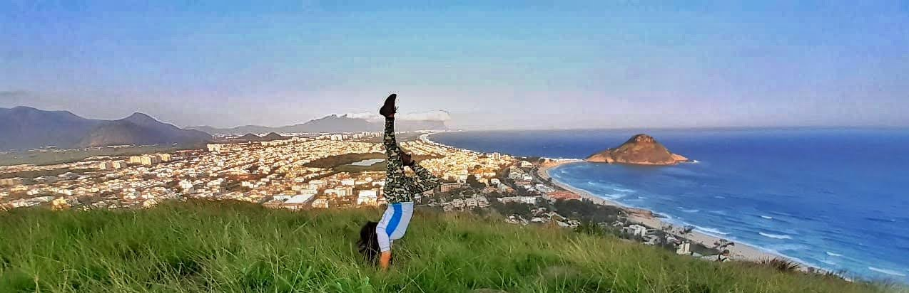

Morro do Rangel
Morro do Rangel
Localização: Recreio dos Bandeirantes

Mirante do Joá
Localização: Joá

Pedra da Gávea
Localização: São Conrado

Pedra do Ponto
Localização: Piraquara

Mirante do Sacopã
Localização: Lagoa

Pedra do Urubu
Localização: Anil

Castelos da Taquara
Localização: Floresta da Tijuca

Garganta do Céu
Localização: Gávea

Mirante da Cascatinha
Localização: Floresta da Tijuca

Mirante Dona Marta
Localização: Santa Teresa

Cachoeira do Campo
Localização: Pau da Fome